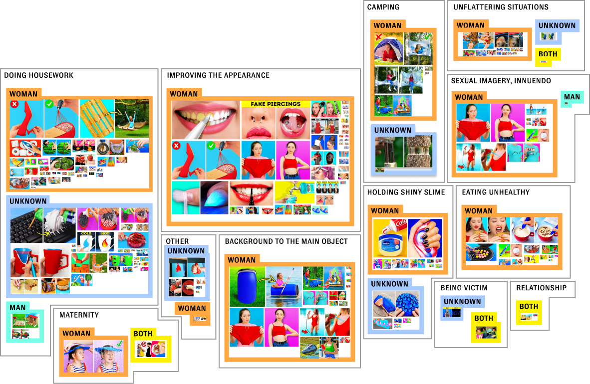
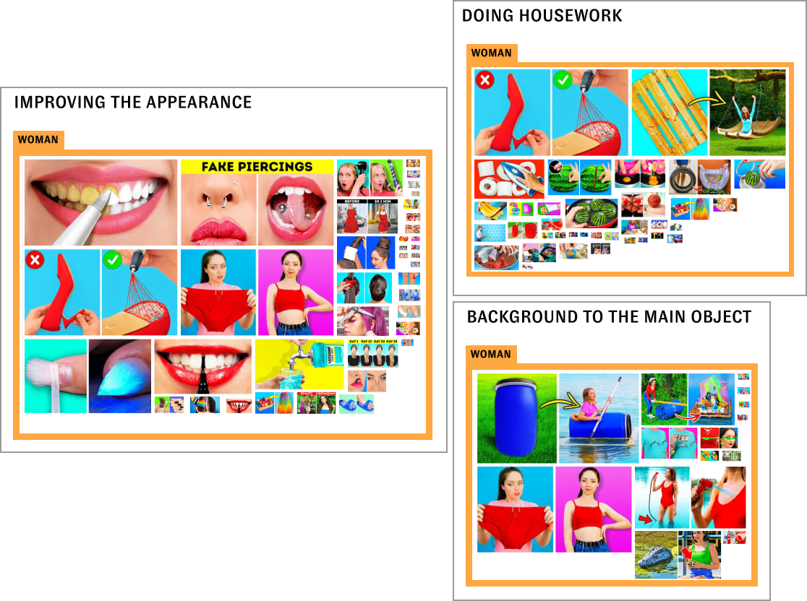
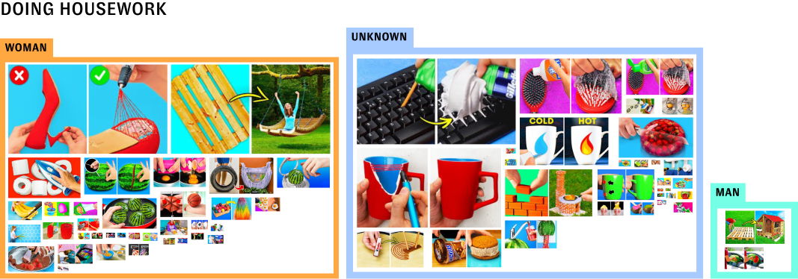
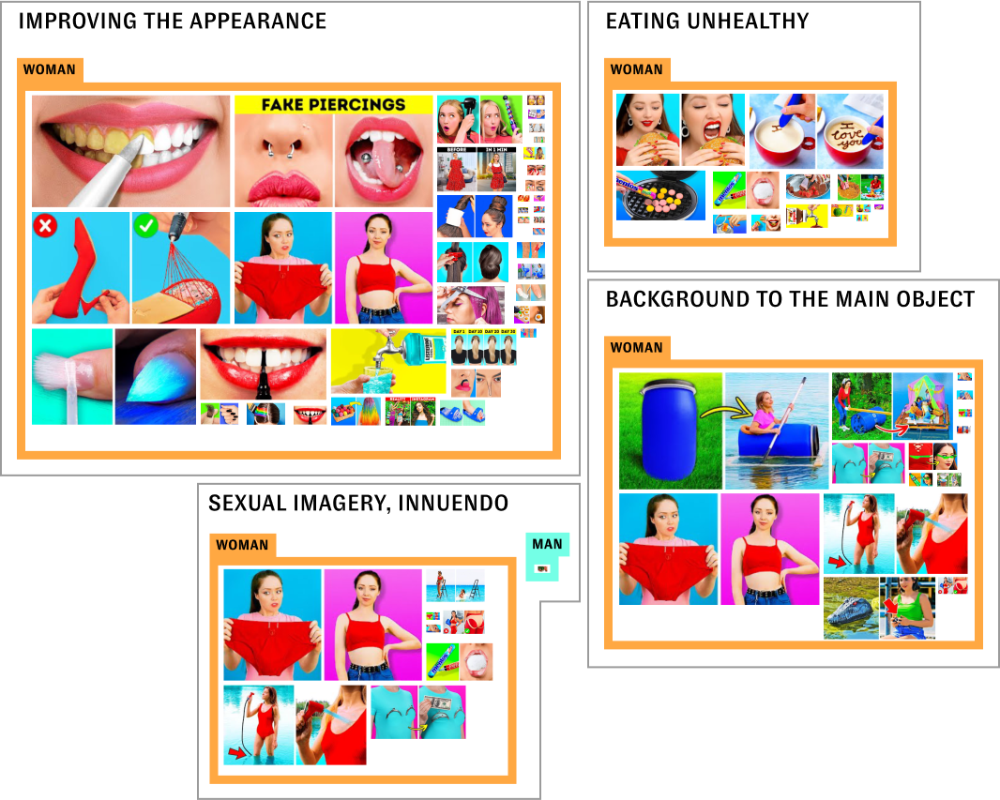

Social media often has a negative impact on self-esteem and mental health, especially for young women. This problem is influenced by many factors, among others the appearance and behavior of women promoted on such platforms. Content farms are strongly focused on profit, putting it below the well-being of the recipients. This research looks at the context in which women are portrayed in thumbnails of videos that reach millions of people.
In the dataset of 200 thumbnails, most of them contained women in various contexts, and these videos are also the ones with the most views. Women are portrayed in all of these contexts below.
Videos with the highest number of views are those containing thumbnails showing women in the context of improving their appearance, doing housework and being the background for the main objet.
Most of the thumbnails showing housework portray women doing so and only a negligible number portray men. However, videos with thumbnails showing housework in which gender cannot be identified are more viewed.
There are three categories of thumbnails that were found to portray only women: improving the appearance, eating unhealthy and being background to the main object. The category of sexual imagery / innuendo all include portrayals of women except one thumbnail that portrays a man.
